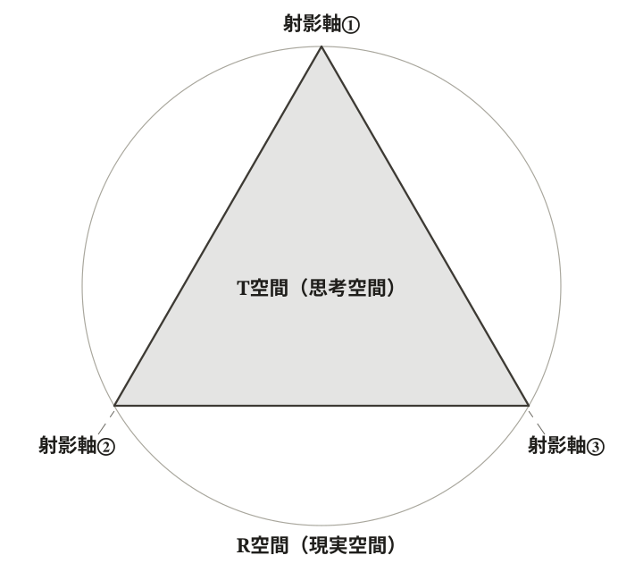
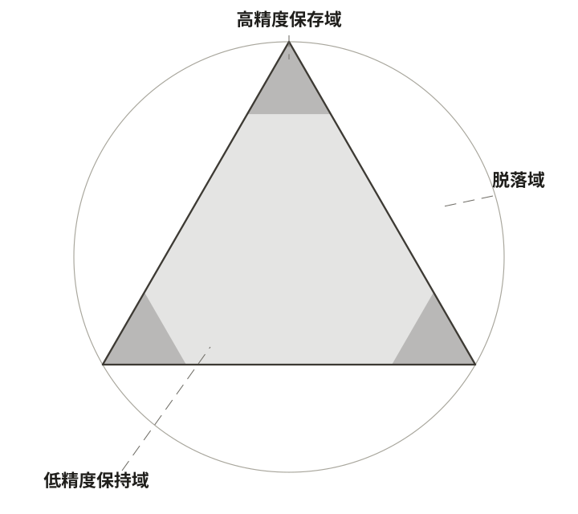

第Ⅰ部 MANESを支える構造
夜空の恒星は、何十億年も燃えつづける。ヒトの身体は、細胞を入れ替えながら保たれつづける。国家は、担い手が世代ごとに替わりながら、続く。だが、歴史を振り返れば、目に入るのは続かなかったものたちの跡でもある——滅んだ都市、絶えた王朝、忘れられた神々。続いているものが続いていられるのは、当たり前のことではない。
序論が開いた「我ら」の範囲の問いも、この当たり前でなさの上に立っている。「我ら」と呼ばれるものもまた、続いたり、続かなかったりしてきた何かだからである。意味を問う手前に、確かめておくべき構造がある。
続くとは一体どういうことなのか。続いているものは、続いていくために何を選び、何を捨て、捨てたものはどこへ行くのか。
第1章 世界を切り取る幾何学——R空間と射影
どんな知性も、世界を完全に写し取ることはできない。世界のなかから何かを選び、何かを捨て、その残りで世界を理解する。これは制約ではなく、理解という営みの構造そのものである。
遠い話ではない。いまこの頁を読んでいる眼は、行の黒だけを拾い、地の白を捨てている。部屋の物音は、気づかれないまま背景に沈んでいる。昨日という一日の大半は、もう思い出せない。それでいて、世界が欠けているという感覚は、どこにもない。捨てられたものは、捨てられたという痕跡ごと、視界の外へ出ていくからである。いや、そもそも視界に入ってから捨てられたのではなく、視界に入る前に捨てられているのではないか。
私たちがいま見ているこの世界は、何を捨てたあとの残りなのか。
§1-1 切り取られる前の世界
世界そのものを問わない
世界地図を開けば、北が上にある。これは慣習である。中世イスラム圏の地図では南が上に置かれていたし、宇宙そのものに「上下」はない。地球が太陽の周りを公転する平面のどちら側を「上」と呼ぶかは、人間が自分の向きを世界に投影した結果である。
方向の優劣は、世界の側から読み出せない。
「世界とは何か」という問いに、本書は答えない。問いを別の形で置き換える。知的主体が世界を扱うとき、何を参照枠として置けば操作が成立するか。本書はこの参照枠を R空間（Reality-space：現実空間） と呼ぶ。R空間は、すべての方向が等しく開かれている高次元真球として概念化される。「真球」とは、特定の方向に偏りがなく、あらゆる方向への接続可能性が同じ重みで存在する数学的比喩である。
R空間は「現実そのもの」を主張するものではない。次節で導入する T空間（Thought-space：思考空間）の歪みを記述するための参照枠であり、その存在論的身分は操作的である。形而上学的な全包含理論を立てるのではなく、知的主体の認識構造を記述するための足場として置く。
量子力学が置く足場
R空間は完全に恣意的な抽象ではない。
物理学が世界を深いところまで分解した先には、量子力学的な構造がある。その形式は、方向間の優劣をあらかじめ内蔵していない——どの方向を基準に取るかは、状態の記述の側には書かれていないのである。日常的に「これが起きる確率」「あれが起きる分布」と呼ぶものは、どの物理量をどのような設定のもとで測るかという指定が加わって、初めて取り出される構造である。ここで踏まえるのは、量子力学のいずれかの解釈ではない。操作可能な記述に達するには、何を測るかの指定が要る——この、形式の側の事実だけである。
R空間を「全方向に等しく開かれた高次元真球」として概念化することは、この性格への幾何学的な対応物である。そして、何が取り出されるかを切り取りの側が決めるというこの構図は、本書が次節で射影と名づけて認識一般へ広げる操作の、物理学における類例にあたる——類例であって、基礎ではない。
量子力学の内部にはなお決着していない複数の解釈が並立するが、本書のこれ以後の議論は、そのいずれの解釈に与しても同型に展開する。
ただし、本書は R空間と量子力学的宇宙を同一視しない。R空間は概念上の参照枠であり、量子力学は物理理論である。両者の身分は異なる。R空間という参照枠が物理的に空転していないこと——これだけが、本章以降の議論を進めるうえで必要な背景である。
価値は R空間にない
「何が得で何が損か」「何が重要で何がそうでないか」という勾配は、R空間そのものには存在しない。北を上と呼ぶか南を上と呼ぶかが慣習であるように、ある方向が別の方向より重要であるという根拠は等方的な空間からは導出できない。勾配は R空間が予め内蔵しているものではなく、R空間から T空間への射影によって生成されるものである。
この設定は方法的選択である。本書は、勾配を R空間に内蔵させる立場——たとえば「世界には客観的な価値の階層が予め存在する」と主張する立場——を採らない。代わりに、勾配の起源を射影操作の側に置く。
ここから一つの帰結が出る。いかなる価値判断も、それを支える R空間そのものから直接には導き出せない。価値の勾配は、射影の産物である。
§1-2 球を平面に写す
地図が選ぶもの、捨てるもの
メルカトル図法という地図がある。1569 年にゲラルドゥス・メルカトルが考案して以降、世界航海の標準となり、いまも世界地図と聞いて多くの人が思い浮かべる長方形の地図はこの図法にもとづく。
メルカトル図法を眺めると、グリーンランドがアフリカと同じくらいの大きさに見える。実際にはアフリカのほうが約 14 倍広い。赤道から極に向かうにつれて、地図は実際の面積を大きく拡大する。極そのものは、地図上には描けない——どれだけ拡大しても、平面上に到達しない。
それでも、メルカトル図法は航海の標準として残った。この地図には、面積を犠牲にしても保存したい性質があったからである。
メルカトルが選んだ性質は、方位（角度）である。地図上で二点を結ぶ直線は、地球上で「常に同じ方位」を保って航行する経路に対応する。船乗りは羅針盤を一定の方角に固定したまま、地図上の直線をたどれば目的地に着ける。これが、面積を犠牲にしてでも保存する価値のあった性質である。
球面を平面に写すとき、方位・面積・距離のすべてを同時に保存することはできない。これは数学的に証明されている事実である。地図を作るとは、何を保存し、何を捨てるかを選ぶ操作である。メルカトル図法は方位を取り、面積を捨てた。モルワイデ図法は面積を取り、方位を捨てた。ロビンソン図法は折衷を取った。それぞれが異なる射影法であり、それぞれが異なる代償を払う。
知的主体は同じことをしている
知的主体が世界を扱うときも、同じ構造の操作が起きている。
人間が一度に意識して扱える情報の量には限りがある。世界の全情報を等しく扱う能力は、構造的に存在しない。何かを前景化し、何かを背景化し、何かを認知地平の外に押し出すことなしには、世界は理解されえない。
この圧縮の幾何学的記述が、R空間から T空間への射影である。射影とは、R空間の高次元情報のうち特定の方向の情報のみを保存して低次元の構造体に写しとる操作である。地図が球面を平面に写すとき方位・面積・距離のどれを保存するかを選択するように、知的主体は無限に開かれた現実空間のうちどの方向を保存するかを選択する。射影法は、保存される性質の選択によって定義される。
有限の頂点で世界を切る
射影によって生成される構造体が、T空間である。T空間は、有限個の頂点をもつ凸多面体として定式化される。

各頂点は、主体が保存することを選択した一つの射影軸に対応する（図1-1 の三つの頂点）。射影軸とは、その方向に勾配を定義できる一つの価値軸である。「重要さ」「危険」「美しさ」「効率」「正しさ」——T空間の頂点として立つのは、この種の方向である。
なぜ頂点は有限個なのか。任意の主体の射影は、有限個の軸によってのみ行われる——これを本書では有限射影原理と呼ぶ。根拠は、射影を行う主体の側にある。任意の操作は、有限個の区別にもとづいてしか実行できない。無限個の軸を同時に操作する主体は、操作という語の定義上、存在しない。有限射影原理は、認知能力の経験的な限界ではなく、操作が成立するための構造的条件である。
T空間が「凸多面体」と呼ばれるのは、頂点の配置が定まれば、主体の認識が、それらの頂点の重みつき混合として表される領域の内に収まるからである。重みつき混合とは、各頂点がどの程度効いているかの配分である。複数の頂点が部分的に効く中間領域はあるが、認識が T空間の外部へ出ることはない。
R空間は球であり、T空間はその内部に置かれた有限頂点の凸多面体である。頂点は必ずしも球面まで届かない——縮退して球の内側に小さくとどまる T空間もありうる。連続的に全方向へ等しく開かれた球と、離散的な少数の頂点へ重みを集中させた多面体。この幾何学的な差分が、本書の出発点である。
失われた方向は戻ってこない
R空間から T空間への射影は不可逆である。T空間の情報から R空間の元の情報を完全に復元することはできない。
これはメルカトル図法と地球の関係でも見える。地図がある作図方法にもとづく射影だという情報が失われれば、その一枚から元の球面を再構成することはできない。そして、たとえ作図方法が分かっていても、地図に描かれなかった極は戻ってこない。
R/T 射影の不可逆性には、二つの含意がある。
第一に、T空間の内部からは R空間の全体像が見えない。T空間に情報を保存できなかった方向——つまり頂点として選択されなかった方向——は、T空間の内部からは存在の感知すらできない。地図に描かれていない大陸が、地図の利用者にとって「存在しないもの」として扱われるのと同じ構造である。
第二に、射影軸を再配置すれば、一部の情報を取り戻すことは原理的には可能である。しかしその操作は、別の方向の情報を脱落させることを伴う。同時に保存できる方向には限りがあるため、ある方向の保存精度を上げることは、別の方向の保存精度を下げることと不可分である。
§1-3 高精度保存域、低精度保持域、脱落域
歪みは位置によって違う
メルカトル図法の歪みは、地図のどの位置でも同じというわけではない。赤道付近では、地図と地球の対応はほぼ忠実である。緯度が上がるにつれて面積拡大の歪みは大きくなり、北極・南極の近傍では歪みは破綻する——極そのものは地図上に描けない。
歪みは位置によって違う。
これは射影一般に共通する構造である。R空間（球）と T空間（多面体）の差分は、T空間内の位置によって異なる大きさを持つ。差分の大小は連続的に変化するが、その連続変化のうちに質的に異なる領域を識別できる。
球と多面体の差分から定義される領域——高精度、低精度、脱落
T空間の頂点の近傍では、多面体の表面は R空間の球面に最も近く、両者の差分は最小である。頂点から離れるにつれて多面体の表面と球の差分は拡大する。複数の頂点の中間領域では、いずれの頂点の勾配も十分には到達しない。さらに離れると、多面体の表面と球の乖離が最大になるか、多面体の内部にすら含まれない方向が生じる。
この差分構造のうちに、以下の領域が定義される。
- 高精度保存域：T空間のうち射影軸（頂点）の近傍であり、R空間との差分が最小の領域。主体はこの領域に勾配を定義し、評価・選好・行為選択の基盤とする。「これは大切である」「あれは重要でない」という日常的判断のすべてが、この領域に属する。
- 低精度保持域：T空間のうち射影軸の中間領域であり、R空間との差分が拡大しているが、なお T空間の内部から感知可能な領域。情報は保持されているが精度が低く、明確な勾配は定義されていない。射影軸の再配置によって高精度保存域に組み込まれうる——すなわち再編・探索の余地を残している。
- 脱落域：いずれの射影軸からも遠く、T空間が実質的に被覆していない方向。主体はこの方向の存在を認知できず、勾配の定義はもちろん、存在の感知すらできない。これは「うっかり見落としているもの」ではない——T空間の内部から構造的に到達不能な領域である。

直感的には、低精度保持域は「まだ探索可能な余白」、脱落域は「構造化された盲点」に対応する。
メルカトル図法の例で言えば、赤道付近の正確な領域が高精度保存域に類比的である。緯度の高い面積拡大領域が低精度保持域に類比的であり、地図上に描けない極そのものが脱落域に類比的である。
T空間の三領域は、物理的には連続的な差分構造の上に置かれている。高精度保存域から低精度保持域、低精度保持域から脱落域への移行は段階的に変化する。それでもなお、知的主体はこれを三つの非連続な領域として分節する。虹のスペクトルが連続的な波長分布であるにもかかわらず七色として分節されるのと同じく、限りある認知は連続的な差異を非連続な区分に圧縮する。この「連続的なものを非連続に分節する」働きは、射影による創発の中心的特徴である。
ここで確立されるのは、三領域が射影の幾何学から直接導かれるという事実である。
広く取るか、細かく取るか
T空間の幾何学的性質は、広がりと解像度という二つの量によって特徴づけられる。
広がりは、T空間が保存している方向の多様さに対応する。射影軸が多く、かつ方向的に分散していれば、広がりは大きい。射影軸が少ないか特定の方向に集中していれば、広がりは小さい。解像度は、保存された方向の内部でどの程度細かく区別しているかに対応する。同じ「重要さ」の方向の中で、十段階に区別しているか百段階に区別しているか——その細かさが解像度である。高い解像度は急峻な勾配を生み、急峻な勾配は判断の精密さと出力の大きさを支える。
知的主体が一度に操作できる射影軸の数には限りがある。広く多くの方向を保存しようとすれば、各方向の解像度は下がる。逆に、特定の方向を細かく区別しようとすれば、保存できる方向の数は減る。広がりと解像度のあいだには構造的なトレードオフがある。
そして極は、このトレードオフの外側を示している。極に向かって、地図は面積をいくらでも拡大していく——だが、どれだけ拡大を重ねても、極は平面上に現れない。脱落域は、解像度の不足ではない。採用された方向の内部をどれだけ細かく区別しても、採用されていない方向がそこに現れることはない。細かさで届く範囲は、広がりが先に決めている。
専門分化では、各主体の T空間が特定方向への高解像度化を進める。高解像度化した主体どうしは、それぞれが保存する方向の偏りが強まるため、共通に勾配を定義できる方向が減る。文明的出力の増大と凝集の困難は、同一の構造的過程の二つの面として現れる。
§1-4 他の射影と出会う
射影法をほどく——配置・勾配・関係
射影法という概念をほどくと、三つの特性が現れる——射影軸の配置、勾配の構造、そして複数の射影法のあいだに成り立つ関係。この三つは、別々の論理的レベルにある。
第一は射影軸の配置である。 射影を行うためには、保存する方向を選択しなければならない。これは射影操作の定義に含まれる論理的前提であり、いかなる射影法も免れることができない。経験的に観察される配置は主体の歴史と状況に依存するが、配置が不可避であることは経験的事実ではなく構造的事実である。
第二は勾配の構造である。 配置が確立されれば、T空間の内部に勾配が立ち現れる。重要なのは、勾配が R空間には存在しないという点である。「何が得で何が損か」という非対称性は R空間の性質ではなく、射影操作が生成するものである。射影軸の配置が変われば、勾配の向きも変わる。勾配は配置の数学的帰結であり、追加前提なしに導出される。
第三は複数の射影法間の関係である。 ここで初めて「主体が複数存在する」という追加前提が要請される。R空間は等方的であり、有限射影原理のもとで複数の主体が同一の射影軸を選択する必然性はない。したがって、異なる射影法が共存するとき、それらのあいだに構造的関係が成立する。
この三つは論理的な順序をもつが、変化の速度はそれぞれで異なりうる。配置が変わっても勾配が惰性的に残ることがあり、勾配が変わっても配置がなお持続することがある。この、三つが別々の速度で変化しうるという非同期性は、後の章で展開される MANES の三層構造の射影論的基盤となる。
二つの射影法のあいだ
メルカトル図法とモルワイデ図法を、机の上に並べてみる。両者は同じ地球を写しているが、何を保存し何を捨てるかの選択が異なる。両者のあいだには、どのような構造的関係が成り立っているか。
異なる射影法 P₁ と P₂ が R空間に対してそれぞれ T₁ と T₂ を生成するとき、両者のあいだには構造的な関係が成り立つ。
まず、重なり——T₁ と T₂ が共通に保存している方向。両者が共通の勾配を定義できる領域であり、対話・合意・協働の幾何学的基盤となる。次に、固有域——T₁ が保存しているが T₂ が保存していない方向（およびその逆）。一方の主体が価値軸として採用しているが他方が採用していない方向であり、勾配定義方向の構造的非共有として顕在化する。さらに、両者がいずれも保存していない方向がある——共通脱落域。両者にとっての構造的無知の領域であり、両者の議論からは原理的に取り上げられない。
ここまでは、二つの射影のあいだに直接成り立つ関係である。これに第三の射影が加わるとき、もう一つの関係が現れる——媒介。T₁ と T₂ が直接には重ならなくても、第三の射影 T₃ が両方と重なりを持てば、T₃ を介した間接的な接続が生じうる。この媒介構造は脆弱であり、媒介者 T₃ の消失で接続は断たれる。
これらの関係をメルカトル図法とモルワイデ図法のあいだに当てはめてみる。
重なりは、地理的な相対関係に現れる。パリの北、ドーバー海峡の向こう側にロンドンがある。この関係は、メルカトル図法でもモルワイデ図法でも同じように読み取れる。両者は同じ地球を写した別の射影だが、地表上の都市の相対配置という方向は、両者が共通に保存している。
固有域は、両者が異なる選択をした性質である。方位の保存はメルカトル図法の固有域であり、面積の保存はモルワイデ図法の固有域である。それぞれの地図は、自分の固有域においては優れた精度を持ち、相手の固有域においては精度を譲る。
共通脱落域は、両者がいずれも保存していない方向である。地下の構造——マントルや地殻、地中の水脈、地下資源の分布——は、メルカトル図法にもモルワイデ図法にも描かれない。両者は地表の幾何学を扱う射影であり、地下は両者の議論からは原理的に取り上げられない。
媒介の例は、いま読まれているこの文章そのものに現れている。メルカトル図法だけを見ても、モルワイデ図法だけを見ても、それぞれの歪みは捉えにくい。両者を並べて記述する第三の T空間——本書のような言語的記述——が橋渡しをすることで、方位の保存と面積の保存の両方の知見が同時に届く。媒介者がいなければ、メルカトル図法とモルワイデ図法は別々の世界として並存しつづけるだけである。
三者以上の場合、重なりの構造は二値的ではなく、部分的な連合と排除のネットワークとして現れる。媒介の媒介、連合の連合といった高次の構造が生じうるが、それらの基本単位は二者および三者の場合に同定された関係の組み合わせである。
自分の歪みは見えない
自分の射影法の歪みは、自分の射影法の内部からは見えない。射影法のすべての部分が同じ規則で歪んでいる以上、当の射影法の内部には「歪み」を判定する基準が存在しないからである。射影法の差異は、射影の結果（T空間の形状）を比較することで初めて認識される。
メルカトル図法だけを眺めていても、グリーンランドが実際よりも大きく見えていることには気づきにくい。モルワイデ図法を隣に置いたときに初めて、メルカトル図法における極周辺の面積拡大は「歪み」として浮かび上がる。逆もまた然りで、モルワイデ図法を一枚だけ見ていても、その方位の歪みは「歪み」として認識されにくい。
この認識の構造から、本書全体に効く方法的含意が二つ導かれる。
第一に、自らの射影法の限界を見るためには、構造的に別の射影法との接触が要請される。単独で完結する自己反省は原理的に不十分である。
第二に、「正しい射影法」という観念は、射影法の外部から判定不能である。R空間は等方的であり、射影軸の選択を独立に規定する基準を持たないからである。
ここに、本書が後の章で展開する一つの中核命題の輪郭が現れる。射影法の差異——主体間の認識の差異、文明間の世界観の差異——は、計算能力の差異にも、誠実さの差異にも還元されない。何が前景化され、何が背景化され、何が認知地平の外に置かれているかの差異に由来する。
本書の二つの表記——射影の一例
この構造の一例は、本書自身の表記のうちにある。序論で、文明の運命を分かつ二つの「我ら」を導入した——「操作能力的我ら」と「実存的我ら」、記号では O と E。同じ二側面を、本書は二通りに書く。そして、この二つの書き方は、それ自体が二つの射影法である。
記号 O・E で書くとき、前景化されるのは、それらを変数として扱う操作である——不等式の符号、図形の上での動き、構造のモデル化。背景に退き、ときに認知地平の外へ脱落するのは、「誰と共に在るか」という実存の手触りである。
「操作能力的我ら」「実存的我ら」と書くとき、前景化されるのは、その実存の手触りである——「我ら」と「彼ら」、そして「それら」とのあいだに引かれる境界。背景に退くのは、それらを幾何や数式として扱うことで得られる、論理的・幾何的な操作の見通しのよさである。
同じ対象でありながら、一方の射影法が前景化するものを、他方は背景化する。どちらの表記も、自身が背景化しているものを、その内部からは見ない。本書が二つの表記を併用するのは、装飾ではない。一方だけでは、必ず一方の側が脱落するからである。
本書と専門の視界——媒介のもう一つの例
本章は冒頭近くで、量子力学に短く触れた。あの素描が何を行ったのかを、いま導入した語彙で言い直すことができる。量子力学の内部には複数の解釈が並立しており、それぞれが一つの射影法（ T空間）である。素描が保存したのは、それらの T空間が共通に保存している方向——重なり——だけであった。各解釈が単独で保存している方向、すなわち論争の中身が宿る固有域は、並立しているという事実だけを残して、まとめて背景に退いた。だから、量子力学の根幹にかかわる領域で、本書の記述が持つ情報量は限定的である。これは筆の不足ではなく、重なりだけを取るという選択の幾何学的な帰結である。ここから、本書への批判が生まれうる。
重なりだけを取ったことによる薄さは、本書の内部からは薄さとして見えない（専門外の読者は、さほど違和感なく冒頭を読み進めたのではなかろうか）。自分の射影法の歪みが内部から見えないのと、同じ理由による。それが見えるのは、固有域を保存している射影法——量子力学の専門的視界——と接触したときである。専門家がこの素描を「表面的で浅い」と評するなら、その評は、構造的には正確な報告である（専門家の読者は、本章冒頭を看過しがたく感じたのではなかろうか）。本書の T空間が、その方向に薄いことは事実だからである。そして、本書の記述に対して評価が「浅い」という形を取れること自体が、当の方向が脱落してはいないことを示している。脱落した方向は、浅いとすら言われない——浅さを指摘できるのは、精度は低くとも保持されている方向についてだけである。
この接触の瞬間に、媒介が生まれる。先に、メルカトル図法とモルワイデ図法を橋渡しする第三の T空間として、本書のような言語的記述を挙げた。今度は、役割が逆になる。専門家の応答こそが第三の T空間であり、本書が背景に退けた固有域と、本書の読者とを橋渡しする。本書は、媒介する側にだけ立つのではない。媒介されなければ届かない側にも、立つ。
「自分の射影法の限界が内部からは見えない」というこの幾何学的事実は、後の章で、系が自身の動態を事後にしか観察できないという、より動的な形で再演される。
§1-5 最小モデルを掴んだ——次元の追加はこの先で行う
本章は、世界を切り取る幾何を、できるだけ潰した形で語ってきた。二次元の地図と、図1-1 に示した頂点の数が最小の多面体、すなわち三角形に潰してきた。これは、基底となる概念——射影、三領域、射影軸＝頂点、固有域と共通脱落域——を、まず確実に掴んでもらうための単純化である。そのうえで、複数主体の関わりを二者という最小組み合わせで示唆した。
潰し方を緩めることには、得るものと、失うものがある
次元を上げて潰し方を緩めれば、平らな最小モデルでは一つに見えていたものが、いくつかに分かれて見えてくる。まず、軸どうしの絡み。最小モデルでは頂点（射影軸）を独立に立てたが、軸の数が増えると、軸は互いに直交せず絡み合い、一つを動かすと別の軸が連れて動く。次に、複数主体間の相互作用を導入すると、それぞれの「広がり」の偏りが、全体の焦点を一方へ引き寄せる力として現れる。そして、平らな像がもつ深さ。二次元に潰した像では一点に重なって見えるものが、潰す前の立体では幾段にも分かれている。
これらは、視界を広げると同時に、見通しを悪くする。様々なものを同時に視野へ入れようとすれば、最小モデルのもっていた掴みやすさは失われる。だから本章は、まず三角形に潰した最小モデルを固めることから始めた。三次元以上への拡張——軸の絡み、射影の重なり、像の深さ——は、本書全体を通じて、必要な箇所で段階的に加えていく。
ここで、本章の最初の一文に戻る。
「どんな知性も、世界を完全に写し取ることはできない。」
平面上の三角形に潰した最小モデルは、読者にも「潰しすぎ」と感じられたのではないだろうか。その感覚は正しい。しかし、「ならば、潰す前の現実をそのまま広げて見ればよい」という方へ向かうなら、その先には行き止まりがある。現実は、超高次元の時空間のなかで、無数の主体がそれぞれに独立して動いている。宇宙——本書が R空間として概念化した現実——は、「宇」（四方上下のあらゆる空間）と「宙」（過去から未来までのすべての時間）を包含する。宇宙の次元のすべてを展開し、ありのままに認識することは、いかなる知性にもできない。最小モデルが圧縮の一方の極（潰しすぎ）だとすれば、その反対の極——完全な展開——は、そもそも何者の手にも届かない。
だから、本書がこれから次元を加えていく作業は、潰しすぎた像から「ありのままの現実」へと圧縮を解いていくことではない。一つの圧縮から、ある程度潰し方を緩めた——それでもなお潰された——別の圧縮へと、選んで移っていくことである。選び、捨て、残りで理解する。これは制約ではなく、理解という営みの構造そのものである。